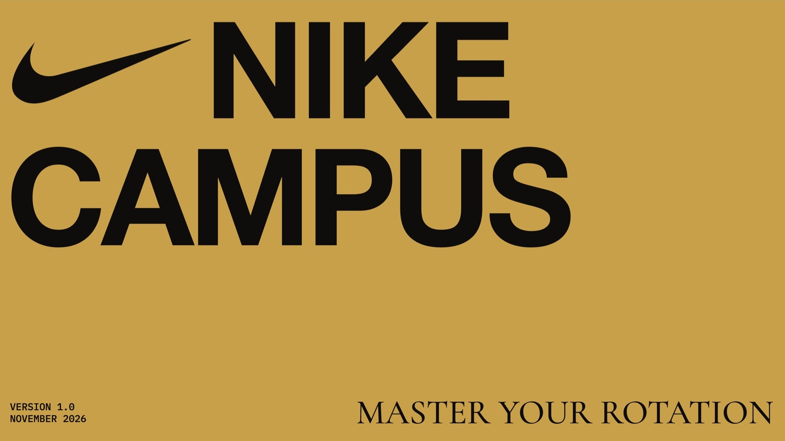

Why this was madeRunners who want to get into the sport don’t know what to wear for each run or goal. This campaign fixes that, teaching new runners which shoe fits which run through a full digital marketing plan, creative plan and brand activation.
